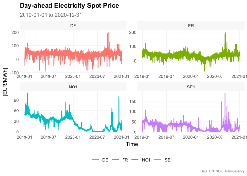
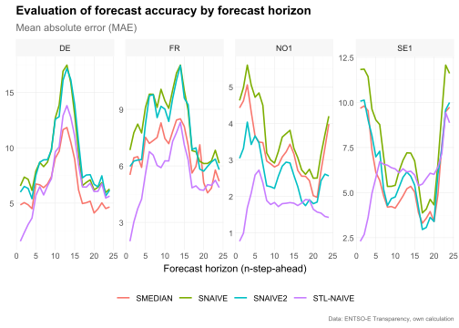
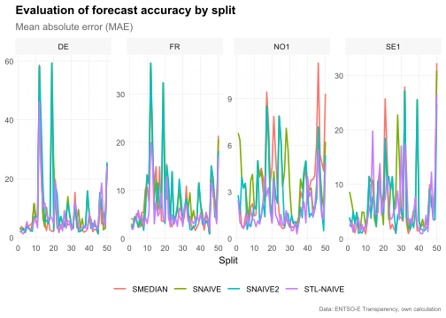

The package tscv provides a collection of functions and tools for time series analysis and forecasting as well as time series cross-validation. This is mainly a set of wrapper and helper functions as well as some extensions for the packages tsibble, fable and fabletools that I find useful for research in the area of time series forecasting.
Disclaimer: The tscv package is highly experimental and it is very likely that there will be (substantial) changes in the near future.
Installation
You can install the development version from GitHub with:
# install.packages("devtools")
devtools::install_github("ahaeusser/tscv")Data preparation
The data set elec_price is a tibble with day-ahead electricity spot prices in [EUR/MWh] from the ENTSO-E Transparency Platform. The data set contains hourly time series data from 2019-01-01 to 2020-12-31 for 8 European bidding zones (BZN):
- DE: Germany (including Luxembourg)
- DK: Denmark
- ES: Spain
- FI: Finland
- FR: France
- NL: Netherlands
- NO1: Norway 1 (Oslo)
- SE1: Sweden 1 (Lulea)
In this vignette, we will use only four time series to demonstrate the functionality of the package (the data set is filtered to the bidding zones Germany, France, Norway and Sweden). You can use the function plot_line() to visualize the four time series. The function summarise_data() is used to explore the structure (start date, end date, number of observations and the number missing and zero values). The function summarise_stats() calculates descriptive statistics for each time series.
series_id = "bidding_zone"
value_id = "value"
index_id = "time"
context <- list(
series_id = series_id,
value_id = value_id,
index_id = index_id
)
# Prepare data set
main_frame <- elec_price %>%
filter(bidding_zone %in% c("DE", "FR", "NO1", "SE1"))
main_frame
#> # A tibble: 70,176 x 5
#> time item unit bidding_zone value
#> <dttm> <chr> <chr> <chr> <dbl>
#> 1 2019-01-01 00:00:00 Day-ahead Price [EUR/MWh] DE 10.1
#> 2 2019-01-01 01:00:00 Day-ahead Price [EUR/MWh] DE -4.08
#> 3 2019-01-01 02:00:00 Day-ahead Price [EUR/MWh] DE -9.91
#> 4 2019-01-01 03:00:00 Day-ahead Price [EUR/MWh] DE -7.41
#> 5 2019-01-01 04:00:00 Day-ahead Price [EUR/MWh] DE -12.6
#> 6 2019-01-01 05:00:00 Day-ahead Price [EUR/MWh] DE -17.2
#> 7 2019-01-01 06:00:00 Day-ahead Price [EUR/MWh] DE -15.1
#> 8 2019-01-01 07:00:00 Day-ahead Price [EUR/MWh] DE -4.93
#> 9 2019-01-01 08:00:00 Day-ahead Price [EUR/MWh] DE -6.33
#> 10 2019-01-01 09:00:00 Day-ahead Price [EUR/MWh] DE -4.93
#> # ... with 70,166 more rows
main_frame %>%
plot_line(
x = time,
y = value,
color = bidding_zone,
facet_var = bidding_zone,
title = "Day-ahead Electricity Spot Price",
subtitle = "2019-01-01 to 2020-12-31",
xlab = "Time",
ylab = "[EUR/MWh]",
caption = "Data: ENTSO-E Transparency"
)
summarise_data(
.data = main_frame,
context = context
)
#> # A tibble: 4 x 8
#> bidding_zone start end n_obs n_missing
#> <chr> <dttm> <dttm> <int> <int>
#> 1 DE 2019-01-01 00:00:00 2020-12-31 23:00:00 17544 0
#> 2 FR 2019-01-01 00:00:00 2020-12-31 23:00:00 17544 0
#> 3 NO1 2019-01-01 00:00:00 2020-12-31 23:00:00 17544 0
#> 4 SE1 2019-01-01 00:00:00 2020-12-31 23:00:00 17544 0
#> # ... with 3 more variables: pct_missing <dbl>, n_zeros <int>, pct_zeros <dbl>
summarise_stats(
.data = main_frame,
context = context
)
#> # A tibble: 4 x 11
#> bidding_zone mean median mode sd p0 p25 p75 p100 skewness
#> <chr> <dbl> <dbl> <dbl> <dbl> <dbl> <dbl> <dbl> <dbl> <dbl>
#> 1 DE 34.1 35.1 35.9 16.9 -90.0 26.3 43.8 200. -0.776
#> 2 FR 35.8 36 37.2 15.5 -75.8 26.6 44.9 200. 0.323
#> 3 NO1 24.3 26.9 2.66 17.1 -1.73 6.95 38.8 109. 0.189
#> 4 SE1 26.1 27.9 37.9 15.9 -1.73 11.4 38.5 189. 0.378
#> # ... with 1 more variable: kurtosis <dbl>Split data into training and testing
To prepare the data set for time series cross-validation (TSCV), you can use the function make_split(). This function splits the data into several slices for training and testing (i.e. partitioning into time slices) for time series cross-validation. You can choose between stretch and slide. The first is an expanding window approach, while the latter is a fixed window approach. Furthermore, we define the (initial) window size for training and testing via n_init and n_ahead, as well as the step size for increments via n_skip. Further options for splitting the data are available via type (see function reference for more details).
# Setup for time series cross validation
type = "first"
value = 2400 # size for training window
n_ahead = 24 # size for testing window (= forecast horizon)
n_skip = 23 # skip 23 observations
n_lag = 0 # no lag
mode = "slide" # fixed window approach
exceed = FALSE # only pseudo out-of-sample forecast
split_frame <- make_split(
main_frame = main_frame,
context = context,
type = type,
value = value,
n_ahead = n_ahead,
n_skip = n_skip,
n_lag = n_lag,
mode = mode,
exceed = exceed
)
# For illustration, only the first 50 splits are used
split_frame <- split_frame %>%
filter(split %in% c(1:50))
split_frame
#> # A tibble: 200 x 4
#> bidding_zone split train test
#> <chr> <int> <list> <list>
#> 1 DE 1 <int [2,400]> <int [24]>
#> 2 DE 2 <int [2,400]> <int [24]>
#> 3 DE 3 <int [2,400]> <int [24]>
#> 4 DE 4 <int [2,400]> <int [24]>
#> 5 DE 5 <int [2,400]> <int [24]>
#> 6 DE 6 <int [2,400]> <int [24]>
#> 7 DE 7 <int [2,400]> <int [24]>
#> 8 DE 8 <int [2,400]> <int [24]>
#> 9 DE 9 <int [2,400]> <int [24]>
#> 10 DE 10 <int [2,400]> <int [24]>
#> # ... with 190 more rowsTraining and forecasting
The training and test splits are prepared within split_frame and we are ready for forecasting. The function slice_train() slices the data main_frame according to the splits within split_frame. As we are using forecasting methods from the packages fable and fabletools, we have to convert the data set main_frame from a tibble to a tsibble. Due to the sample size and computation time, only very simple benchmark methods are used:
-
SNAIVE: Seasonal naive model with weekly seasonality (from packagefable) -
STL-NAIVE: STL-decomposition model and naive forecast. The series is decomposed via STL and the seasonal adjusted series is predicted via the naive approach. Afterwards, seasonal component is added to the forecasts (from packagesfableandfeasts) -
SNAIVE2: Variation of the seasonal naive approach. Mondays, Saturdays and Sundays are treated with a weekly lag. Tuesdays, Wednesdays, Thursdays and Fridays are treated with a daily lag. -
SMEDIAN: Seasonal median model
The functions SMEDIAN() and SNAIVE2() are extensions to the fable package
# Slice training data from main_frame according to split_frame
train_frame <- slice_train(
main_frame = main_frame,
split_frame = split_frame,
context = context
)
train_frame
#> # A tibble: 480,000 x 6
#> time item unit bidding_zone value split
#> <dttm> <chr> <chr> <chr> <dbl> <int>
#> 1 2019-01-01 00:00:00 Day-ahead Price [EUR/MWh] DE 10.1 1
#> 2 2019-01-01 01:00:00 Day-ahead Price [EUR/MWh] DE -4.08 1
#> 3 2019-01-01 02:00:00 Day-ahead Price [EUR/MWh] DE -9.91 1
#> 4 2019-01-01 03:00:00 Day-ahead Price [EUR/MWh] DE -7.41 1
#> 5 2019-01-01 04:00:00 Day-ahead Price [EUR/MWh] DE -12.6 1
#> 6 2019-01-01 05:00:00 Day-ahead Price [EUR/MWh] DE -17.2 1
#> 7 2019-01-01 06:00:00 Day-ahead Price [EUR/MWh] DE -15.1 1
#> 8 2019-01-01 07:00:00 Day-ahead Price [EUR/MWh] DE -4.93 1
#> 9 2019-01-01 08:00:00 Day-ahead Price [EUR/MWh] DE -6.33 1
#> 10 2019-01-01 09:00:00 Day-ahead Price [EUR/MWh] DE -4.93 1
#> # ... with 479,990 more rows
# Convert tibble to tsibble
train_frame <- train_frame %>%
as_tsibble(
index = time,
key = c(bidding_zone, split)
)
train_frame
#> # A tsibble: 480,000 x 6 [1h] <UTC>
#> # Key: bidding_zone, split [200]
#> time item unit bidding_zone value split
#> <dttm> <chr> <chr> <chr> <dbl> <int>
#> 1 2019-01-01 00:00:00 Day-ahead Price [EUR/MWh] DE 10.1 1
#> 2 2019-01-01 01:00:00 Day-ahead Price [EUR/MWh] DE -4.08 1
#> 3 2019-01-01 02:00:00 Day-ahead Price [EUR/MWh] DE -9.91 1
#> 4 2019-01-01 03:00:00 Day-ahead Price [EUR/MWh] DE -7.41 1
#> 5 2019-01-01 04:00:00 Day-ahead Price [EUR/MWh] DE -12.6 1
#> 6 2019-01-01 05:00:00 Day-ahead Price [EUR/MWh] DE -17.2 1
#> 7 2019-01-01 06:00:00 Day-ahead Price [EUR/MWh] DE -15.1 1
#> 8 2019-01-01 07:00:00 Day-ahead Price [EUR/MWh] DE -4.93 1
#> 9 2019-01-01 08:00:00 Day-ahead Price [EUR/MWh] DE -6.33 1
#> 10 2019-01-01 09:00:00 Day-ahead Price [EUR/MWh] DE -4.93 1
#> # ... with 479,990 more rows
# Model training via fabletools::model()
model_frame <- train_frame %>%
model(
"SNAIVE" = SNAIVE(value ~ lag("week")),
"STL-NAIVE" = decomposition_model(STL(value), NAIVE(season_adjust)),
"SNAIVE2" = SNAIVE2(value),
"SMEDIAN" = SMEDIAN(value ~ lag("week"))
)
model_frame
#> # A mable: 200 x 6
#> # Key: bidding_zone, split [200]
#> bidding_zone split SNAIVE `STL-NAIVE` SNAIVE2 SMEDIAN
#> <chr> <int> <model> <model> <model> <model>
#> 1 DE 1 <SNAIVE> <STL decomposition model> <SNAIVE2> <SMEDIAN>
#> 2 DE 2 <SNAIVE> <STL decomposition model> <SNAIVE2> <SMEDIAN>
#> 3 DE 3 <SNAIVE> <STL decomposition model> <SNAIVE2> <SMEDIAN>
#> 4 DE 4 <SNAIVE> <STL decomposition model> <SNAIVE2> <SMEDIAN>
#> 5 DE 5 <SNAIVE> <STL decomposition model> <SNAIVE2> <SMEDIAN>
#> 6 DE 6 <SNAIVE> <STL decomposition model> <SNAIVE2> <SMEDIAN>
#> 7 DE 7 <SNAIVE> <STL decomposition model> <SNAIVE2> <SMEDIAN>
#> 8 DE 8 <SNAIVE> <STL decomposition model> <SNAIVE2> <SMEDIAN>
#> 9 DE 9 <SNAIVE> <STL decomposition model> <SNAIVE2> <SMEDIAN>
#> 10 DE 10 <SNAIVE> <STL decomposition model> <SNAIVE2> <SMEDIAN>
#> # ... with 190 more rows
# Forecasting via fabletools::forecast()
fable_frame <- model_frame %>%
forecast(h = n_ahead)
fable_frame
#> # A fable: 19,200 x 6 [1h] <UTC>
#> # Key: bidding_zone, split, .model [800]
#> bidding_zone split .model time value .mean
#> <chr> <int> <chr> <dttm> <dist> <dbl>
#> 1 DE 1 SNAIVE 2019-04-11 00:00:00 N(33, 367) 33
#> 2 DE 1 SNAIVE 2019-04-11 01:00:00 N(33, 367) 32.6
#> 3 DE 1 SNAIVE 2019-04-11 02:00:00 N(34, 367) 34.1
#> 4 DE 1 SNAIVE 2019-04-11 03:00:00 N(37, 367) 36.9
#> 5 DE 1 SNAIVE 2019-04-11 04:00:00 N(45, 367) 44.7
#> 6 DE 1 SNAIVE 2019-04-11 05:00:00 N(54, 367) 53.6
#> 7 DE 1 SNAIVE 2019-04-11 06:00:00 N(60, 367) 59.9
#> 8 DE 1 SNAIVE 2019-04-11 07:00:00 N(47, 367) 46.9
#> 9 DE 1 SNAIVE 2019-04-11 08:00:00 N(48, 367) 48
#> 10 DE 1 SNAIVE 2019-04-11 09:00:00 N(47, 367) 47
#> # ... with 19,190 more rows
# Convert fable_frame (fable) to future_frame (tibble)
future_frame <- make_future(
fable = fable_frame,
context = context
)
future_frame
#> # A tibble: 19,200 x 6
#> time bidding_zone model split horizon point
#> <dttm> <chr> <chr> <int> <int> <dbl>
#> 1 2019-04-11 00:00:00 DE SNAIVE 1 1 33
#> 2 2019-04-11 01:00:00 DE SNAIVE 1 2 32.6
#> 3 2019-04-11 02:00:00 DE SNAIVE 1 3 34.1
#> 4 2019-04-11 03:00:00 DE SNAIVE 1 4 36.9
#> 5 2019-04-11 04:00:00 DE SNAIVE 1 5 44.7
#> 6 2019-04-11 05:00:00 DE SNAIVE 1 6 53.6
#> 7 2019-04-11 06:00:00 DE SNAIVE 1 7 59.9
#> 8 2019-04-11 07:00:00 DE SNAIVE 1 8 46.9
#> 9 2019-04-11 08:00:00 DE SNAIVE 1 9 48
#> 10 2019-04-11 09:00:00 DE SNAIVE 1 10 47
#> # ... with 19,190 more rowsEvaluation of forecast accuracy
To evaluate the forecast accuracy, the function make_accuracy() is used. You can define whether to evaluate the accuracy by horizon or by split. Several accuracy metrics are available:
-
ME: mean error -
MAE: mean absolute error -
MSE: mean squared error -
RMSE: root mean squared error -
MAPE: mean absolute percentage error -
sMAPE: scaled mean absolute percentage error -
MPE: mean percentage error -
rMAE: relative mean absolute error (relative to some user-defined benchmark method)
Forecast accuracy by forecast horizon
# Estimate accuracy metrics by forecast horizon
accuracy_horizon <- make_accuracy(
future_frame = future_frame,
main_frame = main_frame,
context = context,
dimension = "horizon"
)
accuracy_horizon
#> # A tibble: 2,688 x 6
#> bidding_zone model dimension n metric value
#> <chr> <chr> <chr> <int> <chr> <dbl>
#> 1 DE SMEDIAN horizon 1 MAE 4.84
#> 2 DE SMEDIAN horizon 2 MAE 5.05
#> 3 DE SMEDIAN horizon 3 MAE 4.85
#> 4 DE SMEDIAN horizon 4 MAE 4.50
#> 5 DE SMEDIAN horizon 5 MAE 6.73
#> 6 DE SMEDIAN horizon 6 MAE 6.66
#> 7 DE SMEDIAN horizon 7 MAE 6.40
#> 8 DE SMEDIAN horizon 8 MAE 6.73
#> 9 DE SMEDIAN horizon 9 MAE 7.38
#> 10 DE SMEDIAN horizon 10 MAE 9.06
#> # ... with 2,678 more rows
# Visualize results
accuracy_horizon %>%
filter(metric == "MAE") %>%
plot_line(
x = n,
y = value,
facet_var = bidding_zone,
facet_nrow = 1,
color = model,
title = "Evaluation of forecast accuracy by forecast horizon",
subtitle = "Mean absolute error (MAE)",
xlab = "Forecast horizon (n-step-ahead)",
caption = "Data: ENTSO-E Transparency, own calculation"
)
Forecast accuracy by split
# Estimate accuracy metrics by forecast horizon
accuracy_split <- make_accuracy(
future_frame = future_frame,
main_frame = main_frame,
context = context,
dimension = "split"
)
accuracy_split
#> # A tibble: 5,600 x 6
#> bidding_zone model dimension n metric value
#> <chr> <chr> <chr> <int> <chr> <dbl>
#> 1 DE SMEDIAN split 1 MAE 2.80
#> 2 DE SMEDIAN split 2 MAE 3.74
#> 3 DE SMEDIAN split 3 MAE 2.70
#> 4 DE SMEDIAN split 4 MAE 2.53
#> 5 DE SMEDIAN split 5 MAE 4.54
#> 6 DE SMEDIAN split 6 MAE 3.78
#> 7 DE SMEDIAN split 7 MAE 4.38
#> 8 DE SMEDIAN split 8 MAE 4.87
#> 9 DE SMEDIAN split 9 MAE 11.5
#> 10 DE SMEDIAN split 10 MAE 5.02
#> # ... with 5,590 more rows
# Visualize results
accuracy_split %>%
filter(metric == "MAE") %>%
plot_line(
x = n,
y = value,
facet_var = bidding_zone,
facet_nrow = 1,
color = model,
title = "Evaluation of forecast accuracy by split",
subtitle = "Mean absolute error (MAE)",
xlab = "Split",
caption = "Data: ENTSO-E Transparency, own calculation"
)